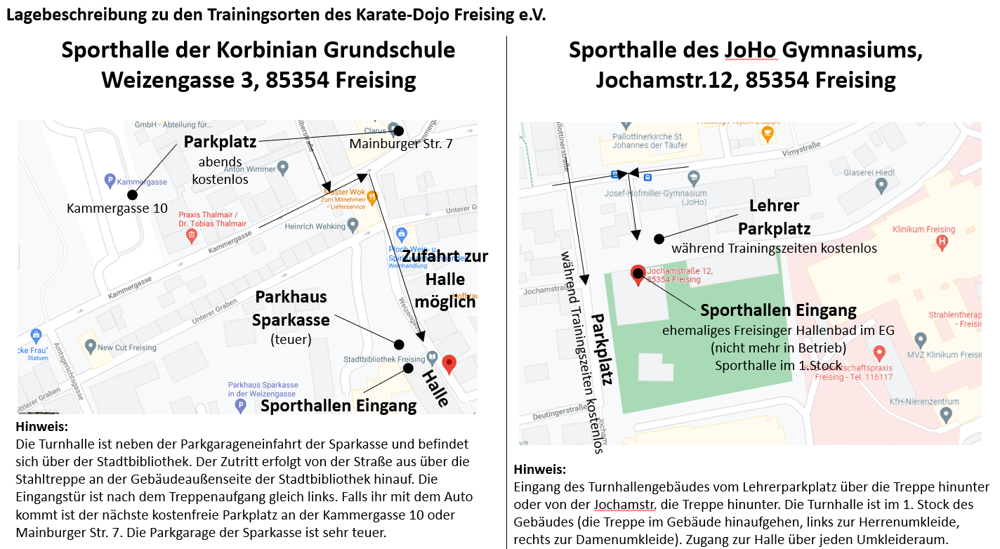

Die Lagebeschreibung zeigt Parkmöglichkeiten, Hallenzugänge und Hinweise zur Orientierung vor Ort. Die Google-Maps-Links sind direkt hinterlegt; QR-Codes können je Trainingsort ergänzt werden.
Sporthalle des Josef-Hofmiller-Gymnasiums
Jochamstraße 12, 85354 Freising
In Google Maps öffnenSporthalle der Korbinian Grundschule
Weizengasse 3, 85354 Freising
In Google Maps öffnen